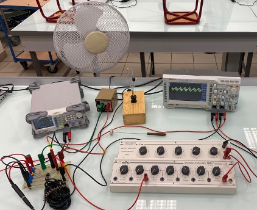
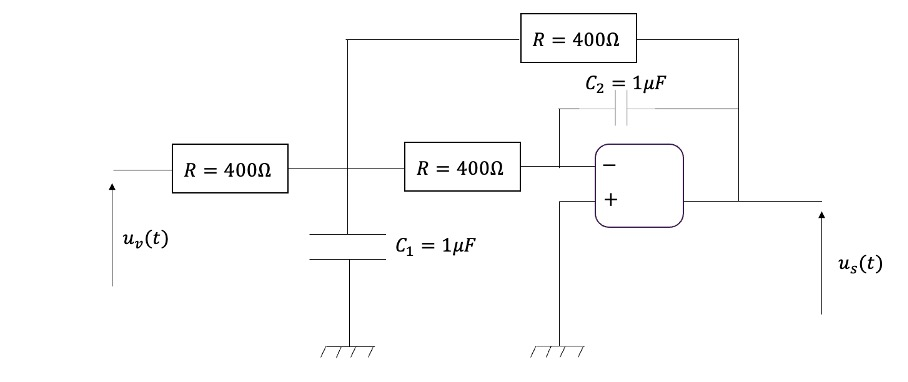
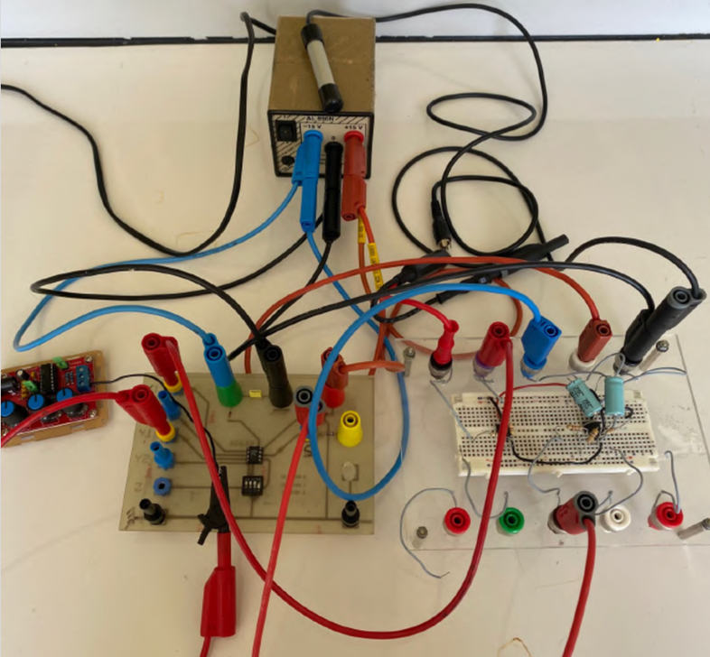

Wind Noise Reduction in Ski Helmets
Objective
The main objective of this project was to reduce wind noise in ski helmets while preserving useful ambient sounds. The project implements a synchronous detection (a process that isolates signals mixed with noise) using basic electronic components to isolate a target signal buried in wind-induced noise.
Tools & Languages
-
 Python
Python
-
 MATLAB
MATLAB
-
 SciPy (signal)
SciPy (signal)
-
 NumPy (FFT)
NumPy (FFT)
Project Overview
- Conducted a state-of-the-art review on wind noise generation during skiing and existing signal processing approaches for noise reduction.
- Defined a global methodology combining analytical modeling, electronic circuit design, experimental testing, and validation of results.
- Designed a synchronous detection approach based on lock-in amplifier principles to isolate a target signal from wind-induced noise.

Initial Experimentation
- Set up an experimental bench using a tuning fork to generate a pure reference signal and a fan to reproduce wind noise under controlled conditions.
- Identified the frequency ranges of interest, with wind noise mainly above 400 Hz and useful ambient signals concentrated between 100 and 400 Hz.

Optimizing Signal Filtering
- Started with a first-order low-pass filter and evaluated its limitations through analytical calculations and experimental measurements.
- Improved the system by adding an amplification stage and a second-order active low-pass filter (Rauch structure) to increase noise attenuation.
-
Miniaturized the final design using a compact generator and integrated the circuit
onto a prototype board suitable for further testing.

Results
The final system was evaluated through a combination of analytical modeling and experimental testing, allowing a direct comparison between predicted and measured performance.
- Noise attenuation: ~70% reduction in noise interference above the cutoff frequency
- Model consistency: ~90% agreement between experimental results and analytical model